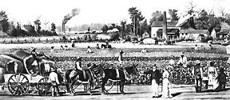

|
A plantation is a large-scale agricultural enterprise that produces cash
crops. Plantations were fairly commonplace in the eighteenth and nineteenth
centuries, and could be found in South and Central America, the Caribbean, and
Great Britain during that time. In the United States, they were limited to the
South, and were particularly prevalent the lower South. The owners of American
plantations utilized African-American slave labor almost exclusively.
In the colonial era, most Southern plantations were located along rivers,
ready sources of both water and transportation. During that time, the most
important plantation cash crop was tobacco, especially in Virginia and Maryland.
In Louisiana, which is more humid, sugar was a popular choice. In South Carolina
and Georgia, much indigo was grown, as was rice, and--in a few
locations--long-staple cotton. The soil of South Carolina, in particular, was
quite fertile, such that when the Constitution was signed, nine of America's ten
wealthiest citizens were planters from South Carolina.
|

A Virginia Cotton Plantation
|
At the start of the new republic, the South's plantations were in something
of a decline. Years of growing nutrient-intensive crops, particularly tobacco,
had left the soil exhausted and had resulted in decreasing yields. At the same
time, worldwide prices for the South's crops dropped. For a short period, it
appeared that the plantation system--and even the institution of slavery--might
come to an end. Indeed, at one point, there were more anti-slavery societies in
the South than in the North. Then, in 1793, Eli Whitney invented the cotton gin.
This made it possible to process short-staple cotton--which, unlike long-staple
cotton, could be grown throughout most of the South--quickly and profitably. Many
plantation owners, beginning with those in South Carolina, promptly converted to
cotton production. Though the earlier cash crops--rice, indigo, tobacco,
sugar--were still produced after Whitney's invention, cotton was unquestionably
king in the antebellum era.
Even at their height, plantations made up a minority of the South's farms. In
order to be considered a planter--as formally defined by the Confederate
government in 1862--one had to own at least 20 slaves. By this definition, only
50,000 of the South's 400,000 slave holders in 1860--about 12 percent--qualified
as planters. As many farms had no slaves at all, an even lower percentage of
those--perhaps as little as five percent--counted as plantations. Nonetheless, the
plantation became emblematic of the South--both during the nineteenth century,
and thereafter. There was good reason for this, as plantations drove the
Southern economy, and planters made up nearly all of the South's political
elite. George Washington, Thomas Jefferson, Andrew Jackson, Jefferson Davis, and
John C. Calhoun all owned plantations.

Slave families pick cotton on a Georgia plantation.
|
Given the importance of plantations to the Southern economy, and the
prevalence of plantation owners in positions of power, the needs of the
plantation system drove the Southern political agenda in the decades before the
Civil War. To start, Southern planters--particularly cotton planters--exported
much of their product, and imported many of the manufactured goods they needed.
This meant that they preferred--demanded, in fact--low taxes on imports, which are
called tariffs. One on occasion in 1832, when tariff rates got too high, South
Carolinians--led by John C. Calhoun--threatened to defy the federal government,
and even to secede. The crisis ultimately passed when a compromise tariff was
adopted, but the threat continued to linger thereafter.
As important as the tariff was to Southern plantation owners, however, it was
dwarfed in significance by slavery. The problem of runaway slaves was one major
concern, and plantation owners consistently pressed the federal government to
help them protect their property, ultimately securing passage of two different
Fugitive Slave Acts, one in 1793 and one in 1850. An even more important concern
was the maintenance and extension of slavery. In the 1790s and 1800s, Southern
soil--though drained of the nutrients needed for tobacco--was ripe for cotton
growing. However, cotton too is a demanding crop, and to keep the South's cotton
economy strong, a constant supply fresh land was necessary. Thus, plantation
owners were not only leery of efforts to eliminate slavery--in other words,
abolitionism--but also of any attempt to halt the institution's spread into the
Western territories. When Abraham Lincoln was elected in 1860, based largely on
a promise to contain slavery to those states where it already existed, war was
the result. It is not a coincidence that South Carolina, where the plantation
economy was most developed, was the first state to secede.
Like the manors of feudal times, plantations were self-sustaining entities
that produced most of what was needed for daily living. The primary labor force
was slaves, who worked the fields, tended animals, and did household labor.
Often, particularly on large plantations, artisan slaves were trained to do
blacksmithing, to make pottery and barrels, and to perform other manner of
skilled tasks. Plantations utilized different approaches to organizing labor,
depending on the crop grown and the owner's preference. In some cases, slaves
were expected to work for a certain amount of time each day--usually from sunrise
to sunset--six days a week, with only Sunday off. This labor was generally
performed in gangs, sometimes managed by a white overseer. On other plantations,
slaves were assigned a certain task or a certain amount of work they were
expected to complete; once they did so, they were free for the rest of the day.
The size of plantations depended largely upon the crops being grown. As
cotton required less labor per acre than other crops, cotton growers were able
to invest their money in land, rather than slaves. Consequently, cotton
plantations tended to be quite large. So too were sugar plantations--the largest
plantation in the United State before the Civil War, comprised of 20,000-acres
owned by Wade Hampton III, was a sugar plantation. Rice cultivation, by
contrast, was highly labor intensive. As such, rice planters spent much of their
money on slaves, and rice plantations tended to be fairly small. The same was
true, to a lesser extent, of indigo and tobacco plantations.

These slave cabins, though meager, were nonetheless the
finest given to any slave. Most slave cabins were even poorer than these--badly
constructed and made of inferior materials.
|
Plantation homes were as varied in size and style as the plantations
themselves. The "Big House" was the central feature of a plantation, serving the
planter as both a residence and a symbol of his power and wealth. Two or three
stories in height, these mansions were generally designed in Greek Revival or
Federal style, and surrounded by trees and other vegetation. The could be quite
grand--particularly those built in the decades directly before the Civil
War--though not quite so majestic as imagined in films like Gone With the
Wind (1939). Inside, the residences were impressively exquisite in taste and
quality. Planters flaunted their wealth by furnishing their house with
fashionable European furniture and artworks.
Of course, the Big House was not the only building to be found on a
plantation's grounds. Most also had a henhouse, a smokehouse, stables, a barn,
workshops, silos, tool sheds, and other manner of practical buildings. Larger
plantations might also have a school for white children, a chapel, and one or
more overseers' houses. The least attractive feature of the plantation--usually
tucked away, out of view--was "the street," where rows of slave cabins were
located. These cabins were small, cramped, poorly lit, and poorly ventilated.
Most had windows without panes that could admit light and fresh air in the
daytime but had to be closed at night to keep out insects and small animals. In
addition to these cabins, the street also commonly included a nursery and an
infirmary.
Planters became legendary for the manner in which they spent their leisure
time, and with just cause. Men's avocations included hunting, fishing,
horse racing, and cockfighting. Plantation women had rather less free time than
the mythology of the plantation suggests, but they did enjoy informal gatherings
with other women, especially relatives. Both men and women participated in
balls, barbecues, and other social events. These were gala affairs, enlivened
with copious quantities of alcohol.
Like knights of old, planters developed a sense of honor and custom that
baffled their Northern brethren. The slightest insult might provoke a duel, in
which many opponents fought to kill. The weapon of choice for these encounters
was usually a dueling pistol, though sometimes swords were used. Some
planters--Andrew Jackson among them--fought more than a dozen duels in their
lifetime in response to slights--perceived or real. Consistent with this feudal
worldview, plantation mistresses were put on a pedestal, and were expected to be
paragons of femininity, deferring to men at all times. Most plantation women
embraced this role, and as a consequence, the burgeoning women's rights movement
of the nineteenth century had few Southern members. The chivalry of Southern
planters ultimately became a critical part of Southern identity, easily
outliving the plantation system itself.
Naturally, the culture of slaves on the plantation was quite different. Many
of the leisure activities of the master--hunting and fishing--were just jobs for
slaves, necessary in order to supplement the foodstuffs they were provided. This
is not to say that slaves had no leisure activities, however. In the evenings,
and on the days when they did not work, slaves amused themselves with their own
dances and parties, with sporting contests like boxing matches and foot races,
and with musical performances that relied heavily on percussion instruments and
singing. The extent to which these slave activities were tolerated by the master
varied widely.

This chapel was used by slaves for more than a century.
|
As much as possible, slaves developed their own separate institutions. Many
became Christians, usually joining more liberal sects like the Baptists and
Methodists, where African Americans were welcomed. Christianity, with its
message of deliverance from bondage, naturally provided much comfort to the
enslaved. African Americans on the plantation also built some semblance of a
family life. These families were inherently unstable, however--marriages between
slaves had no legal standing, and the sale of family members to faraway owners
was a common occurrence. Slaves also had their own unique folklore that blended
both African and American elements. This folklore tended to communicate messages
that were helpful or comforting for slaves. For example, a common character in
slave folklore was the trickster, who mocks those in power and violates proper
rules of behavior.
During the antebellum era, the nation's economy grew dramatically, and
locomotives and steam ships helped connect the South to the rest of the nation.
Southerner planters proved hostile to these changes, however. In part, this was
because they felt under attack from the North, and chose to turn inward. In
part, it was because their primary assets--slaves and land--were not very liquid
and could not easily be utilized for any application besides agriculture. There
was, therefore, little commitment to or investment in factories on the part of
Southern elites. As a result, the South stagnated even as the prices for cotton
and other crops boomed, falling further and further behind the rest of the
nation as it mechanized and industrialized.
The Civil War proved to be the death knell for the Southern plantation
system. Union troops destroyed many plantations; those that survived could not
sell their products during the war, and then suffered from severely depressed
prices after the war. Most important, of course, was the fact that the conflict
brought an end to slavery, and thus deprived planters of the only labor source
they could imagine using. Ultimately, Southern plantations were subdivided into
smaller farms and leased to former slaves--a system called sharecropping. With
the rise of sharecropping in the 1870s, the Southern plantation disappeared from
the landscape and passed into American mythology.
Source: Christopher Bates, ed. The Encyclopedia of the Early
Republic and Antebellum America (Armonk, NY: M.E. Sharpe, 2010), 814-818.
|